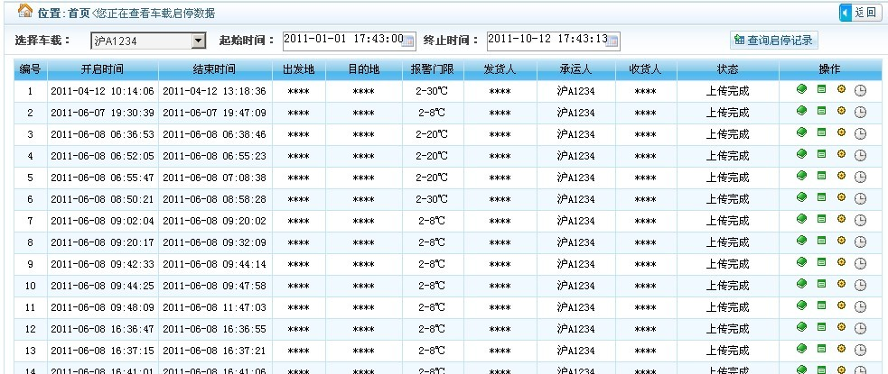
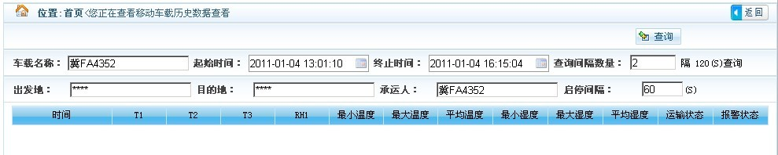
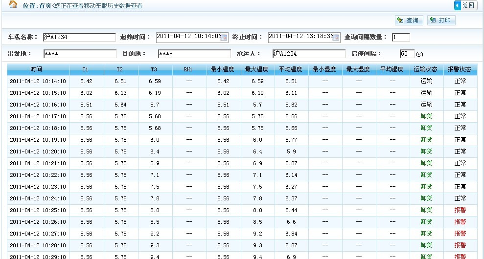
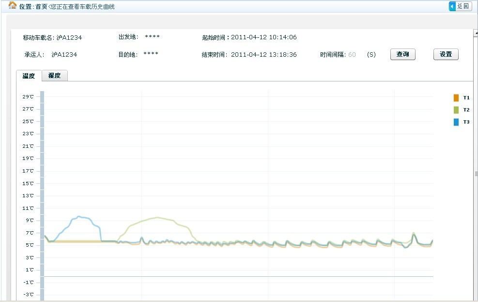
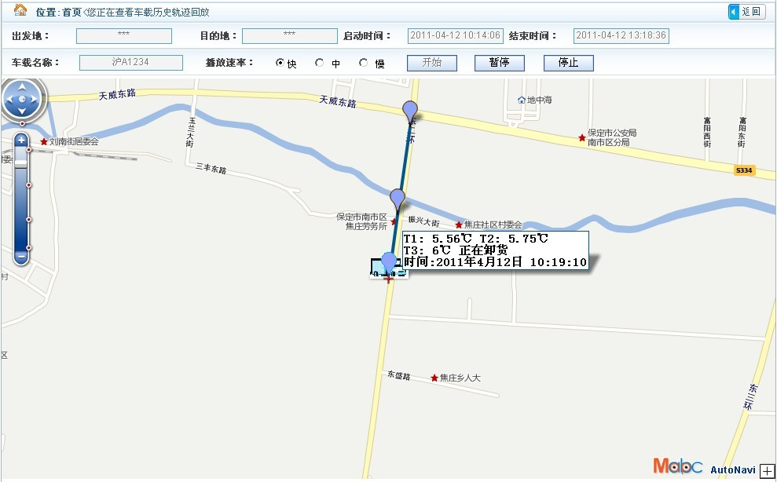
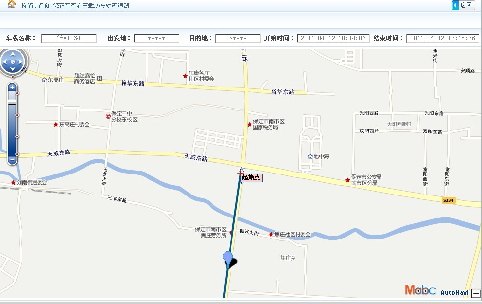

- 1、查询当前登录用户所在企业，所有车载工程的历史数据情况。其中包括车载工程的历史启停记录查询，以及每条启停记录对应的历史数据查询、历史曲线查询、历史轨迹回放和历史轨迹追溯功能。
- 1、用户点击左侧的"车载工程",右侧会显示车载的所有功能按钮和所有车载工程的信息列表，功能按钮分别是实时、历史。
 图一
图一
(一)车载历史启停记录
2、用户点击"历史"按钮，进入车载工程的历史启停记录查询页面。
图二
3、在车载工程历史启停记录查询页面(上图)输入查询条件，点击"查询启停记录"按钮，页面将显示所有符合条件的数据结果。

图三
(二)车载历史数据查看
4、在车载工程的历史启停记录查询页面的查询结果(上图)中，列表最后一列"操作"有四个小图标，即对应的四个功能分别是车载历史数据、车载历史曲线、车载历史轨迹回放和车载历史轨迹追溯。点击对应启停记录的"操作"一列的"车载历史数据"小图标，进入车载历史数据查看页面。

图四
5、用户修改好查询条件后（注：只可修改查询间隔数量值，其他条件不可更改），点击"查询"按钮，页面将显示符合条件的所有数据结果。同时用户可以选择打印查询得到的数据结果。

图五
(三)车载历史曲线查看
6、在车载工程的历史启停记录查询页面的查询结果(图三)中，点击对应启停记录的"操作"一列的"车载历史曲线"小图标，进入车载历史曲线查看页面。并在页面点击"查询"按钮，将得到历史数据曲线图。如需要更直观的曲线图，可以点击"设置"按钮来调整曲线图显示的温湿度的最大值和最小值。

图六
(四)车载历史轨迹回放
7、在车载工程的历史启停记录查询页面的查询结果(图三)中，点击对应启停记录的"操作"一列的"车载历史轨迹回放"小图标，进入车载历史轨迹回放页面。并在页面上方选定播放频率后，点击"开始"按钮，将会在地图上回放该条启停记录的历史数据和轨迹。

图七
(五)车载历史轨迹追溯
8、在车载工程的历史启停记录查询页面的查询结果(图三)中，点击对应启停记录的"操作"一列的"车载历史轨迹追溯"小图标，进入车载历史轨迹追溯页面。

图八